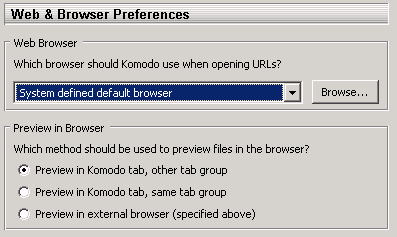
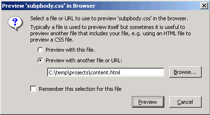
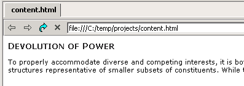
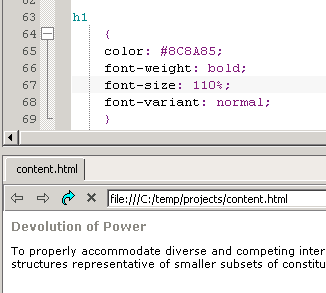

Set the web and
browser preference to Preview in Komodo tab,
other tab group.

Click the Web Preview button and specify a
file which uses the CSS file.

The preview displays the CSS file via the specified HTML
file.

Alter the CSS file. When the changes are saved, the preview
is automatically updated.